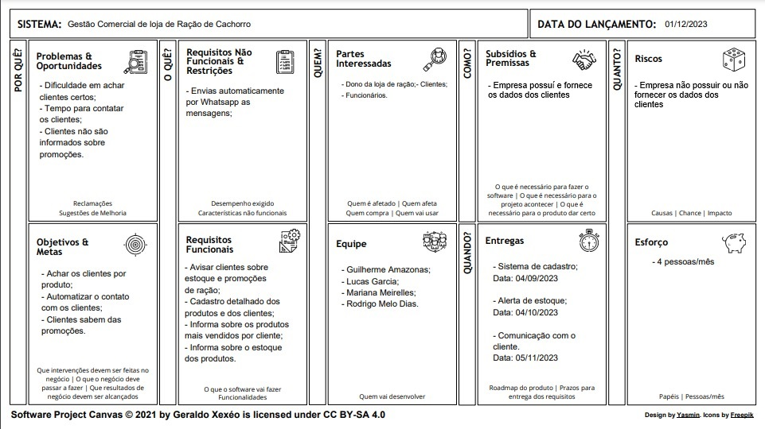

Membros do Grupo
- Guilherme Amazonas
- Lucas Garcia
- Mariana Meirelles
- Rodrigo Melo
Relato do Cliente
"Tenho uma loja de ração e o sistema que uso atualmente não atende algumas das minhas necessidades. Gostaria de conseguir gerar uma lista de clientes por algum filtro, como um produto específico ou um conjunto de produtos e enviar para os números cadastrados dos clientes que costumam comprar esse tipo de produto um aviso com as promoções."
Proposta de Sistema
Uma solução abrangente para gestão comercial, concentrando-se em um banco de dados central para produtos, categorias, clientes, vendas e estoque. Cadastros detalhados de produtos, que serão harmonizados com informações de clientes para personalização. A integração entre vendas e estoque permitirá análises estratégicas, alertas automáticos evitarão escassez de estoque e interações proativas informarão clientes sobre descontos e produtos em baixa, impulsionando sua eficiência operacional e satisfação do cliente.
Valor Entregue
Nosso sistema visa ECONOMIZAR TEMPO e ORGANIZAR. Economiza tempo ao mandar mensagems automaticamente para os clientes e organizar por fazer um filtro.
Canvas
Partes Interessadas e Histórias do Usuário
Link para a planilhaCasos de Uso
Geração de Lista de Clientes e Envio de Promoções
Ator Principal: Dono da loja de ração
Descrição: Este caso de uso permite ao dono da loja de ração gerar uma lista de clientes com base em filtros específicos, como produtos ou categorias de produtos, e enviar promoções para os clientes selecionados.
Fluxo Principal:
- O dono da loja acessa o sistema de gestão comercial.
- Ele seleciona a opção "Geração de Lista de Clientes e Envio de Promoções".
- O sistema exibe opções de filtros, como produtos específicos ou categorias de produtos.
- O dono da loja escolhe os filtros desejados e define os critérios para a seleção de clientes.
- O sistema gera uma lista de clientes com base nos filtros e critérios selecionados.
- O dono da loja revisa a lista de clientes gerada.
- Ele compõe uma mensagem promocional ou seleciona uma promoção existente para enviar.
- O sistema envia a mensagem promocional para os clientes selecionados através dos números cadastrados.
- O dono da loja recebe uma confirmação de que as mensagens foram enviadas com sucesso.
Caminhos Alternativos:
4a- Se o dono da loja não selecionar nenhum filtro.
- O sistema gera a lista com todos os clientes cadastrados.
7a- Se o dono da loja desejar não enviar uma mensagem promocional.
- O dono da loja clica no botão 'salvar relatório'.
- O sistema gera um arquivo com a lista de clientes sem enviar para os contatos.
Cadastro de Novo Cliente
Ator Principal: Atendente da loja de ração
Descrição: Este caso de uso permite ao atendente da loja de ração cadastrar um novo cliente no sistema.
Fluxo Principal:
- O atendente acessa o sistema de gestão comercial.
- Ele seleciona a opção "Cadastro de Novo Cliente".
- O sistema exibe um formulário de cadastro de cliente.
- O atendente preenche as informações do cliente, que incluem:
- Nome completo
- Endereço
- Número de telefone
- E-mail (opcional)
- Informações sobre animais de estimação (se aplicável)
- O atendente verifica se todas as informações obrigatórias foram preenchidas corretamente.
- Se todas as informações estiverem corretas, o atendente confirma o cadastro.
- O sistema armazena as informações do novo cliente no banco de dados.
- O atendente recebe uma confirmação de que o cliente foi cadastrado com sucesso.
- O cliente recebe em seu telefone uma mensagem de boas-vindas em seu número de celular.
Caminhos Alternativos:
6a- Se o atendente identificar informações em falta ou incorretas.
- O atendente corrigirá os campos necessários e tentará confirmar novamente.
7a- Se o sistema encontrar algum erro ao armazenar as informações.
- O sistema informará o atendente sobre o problema com a mensagem de erro adequada.
8a- Se o sistema já possuir um cliente com o mesmo nome ou número de telefone.
- O atendente será notificado com o sistema poderá exibir os clientes duplicados.
- O atendente verificará se existe uma duplicata do cliente no sistema.
- Se sim, o atendente escolherá qual eliminar.
- Se não, o atendente escolherá manter os dois.
Realização de Venda
Ator Principal: Atendente da loja de ração
Descrição: Este caso de uso permite ao atendente da loja de ração registrar uma venda, associando os produtos comprados ao perfil do cliente, a fim de enriquecer o histórico de compras do cliente.
Fluxo Principal:
- O atendente acessa o sistema de gestão comercial.
- Ele seleciona a opção "Realização de Venda".
- O sistema exibe um formulário de venda, que inclui as seguintes etapas:
- Identificação do cliente (pesquisa pelo nome, número de telefone ou código de cliente).
- Seleção dos produtos a serem vendidos, incluindo quantidade e preço unitário.
- Cálculo do valor total da venda.
- Registro da forma de pagamento (dinheiro, cartão de crédito, etc.).
- Confirmação da venda.
- O atendente completa as etapas do formulário de venda.
- O sistema associa os produtos comprados ao perfil do cliente identificado.
- O sistema atualiza o estoque de produtos de acordo com a venda realizada.
- O sistema armazena as informações da venda no banco de dados, incluindo a data e os produtos vendidos.
- O atendente emite um comprovante da venda para o cliente.
- O atendente encerra a transação.
Caminhos Alternativos:
3a1- Se o atendente não encontrar o cliente no sistema.
- O atendente pode optar por cadastrar um novo cliente ou seguir sem cadastro.
5a- Se houver problemas na associação dos produtos ao perfil do cliente, o sistema alertará o atendente com a mensagem de erro adequada.
6a- Se a venda exceder a quantidade disponível em estoque de algum produto.
- O sistema deve notificar o atendente sobre a possível falta de estoque e permitir que ele ajuste a venda.
Alerta de Estoque Baixo
Ator Principal: Sistema
Descrição: Este caso de uso descreve como o sistema identifica automaticamente quando um produto atinge um nível de estoque baixo e notifica o dono da loja sobre a necessidade de reabastecimento.
Fluxo Principal:
- O sistema monitora constantemente os níveis de estoque de produtos cadastrados no banco de dados.
- Em intervalos regulares ou quando uma venda é registrada, o sistema verifica o estoque atual de cada produto.
- Se o estoque de um produto atingir ou cair abaixo de um limite de estoque baixo predefinido, o sistema gera um alerta.
- O sistema notifica o dono da loja por meio de um aviso ou mensagem, informando quais produtos têm estoque baixo.
- O dono da loja recebe a notificação.